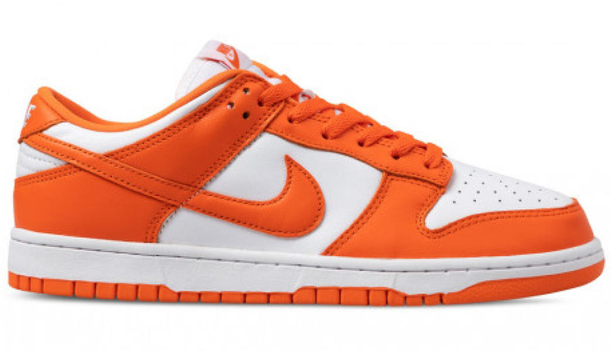

Nike Dunk Low SP
Nike Dunk Low Orange Blaze Syracuse
Nike — американская транснациональная компания, специализирующаяся на спортивной одежде и обуви.
Штаб-квартира — в городе Бивертон (штат Орегон).
Почти вся продукция Nike производится сторонними компаниями-подрядчиками вне территории США (в основном
в Азии), сама компания является правообладателем торговых марок, разрабатывает дизайн продукции и
владеет сетью магазинов (около 1150 по всему миру), а также торговых центров NikeTown. С 20 сентября
2013 года входит в Промышленный индекс Доу Джонса. Nike является самым дорогим спортивным брендом в мире
(по мнению Forbes).
Компания, основанная 25 января 1964 года под названием Blue Ribbon Sports, официально стала Nike, Inc. в
1978 году. Nike продаёт свою продукцию под собственным брендом, а также под марками Nike Golf, Nike Pro,
Nike +, Air Jordan, Nike Blazers, Air Force 1, Nike Dunk, Air Max, Foamposite, Nike Skateboarding, Nike
CR7, Hurley International, Converse. Nike является спонсором многих спортсменов и спортивных команд по
всему миру.
О кроссах
Дата выхода
10/03/2020
Розничная цена
251€
Материалы
Кожа 100%, резина